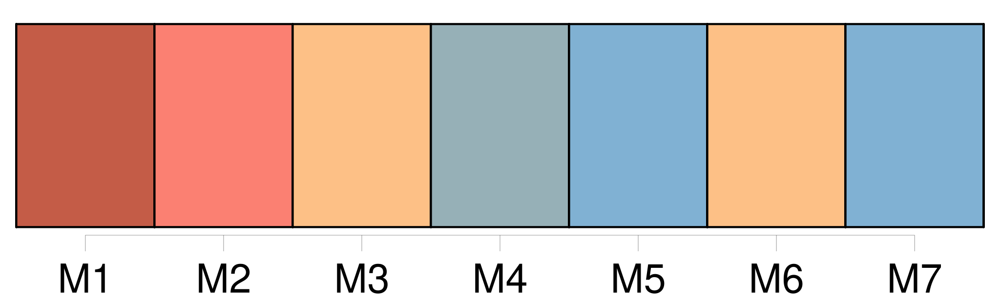
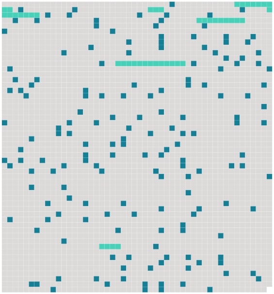

Longueur nb maillons : 172 mentions |
  |
Soudain, derrière une de ces roches à demi noyées dans l'onde silencieuse, je devinai un léger mouvement ; et, m'étant retourné, j'aperçus, prenant [son] bain, se croyant bien seule à cette heure brûlante, [une grande fille nue, enfoncée jusqu'aux seins]
[Elle] tournait la tête vers la pleine mer, et [sautillait] doucement sans me voir. Rien de plus étonnant que ce tableau : [cette belle femme] dans cette eau transparente comme un verre, sous cette lumière aveuglante.
Car [elle] était belle merveilleusement, [cette femme, grande, modelée en statue]
[Elle] se retourna, [poussa] un cri, et, moitié nageant, moitié marchant, se [cacha] tout à fait derrière [sa] roche. Comme il fallait bien qu' [elle] sortît, je m'assis sur la berge et j'attendis. Alors [elle] montra tout doucement [sa] tête surchargée de cheveux noirs liés à la diable.
[Sa] bouche était large, aux lèvres retroussées comme des bourrelets, [ses] yeux énormes, effrontés, et [toute sa chair un peu brunie par le climat] semblait une chair d'ivoire ancien, dure et douce, de belle race blanche teintée par le soleil des nègres. [Elle] me cria : « Allez -vous -en. » Et [sa] voix pleine, un peu forte comme toute [sa] personne, avait un accent guttural. [1 phrases] [Elle] ajouta : « Ça n'est pas bien de rester là, monsieur. » Les XXXrXXX, dans [sa] bouche, roulaient comme des chariots. [3 phrases] Cette fois, [elle] eut l'air furieux ; [elle] cria : « Vous allez [me] faire attraper mal. [Je] ne partirai pas tant que vous serez là. [1 phrases]
Quand [elle] me jugea assez loin, [elle] sortit de l'eau, à demi courbée, me tournant [ses] reins ; et [elle] disparut dans un creux du roc, derrière une jupe suspendue à l'entrée. [1 phrases] [Elle] était encore au bain, mais vêtue d'un costume entier.
[Elle] se mit à rire en me montrant [ses] dents luisantes. [2 phrases] [Elle] s'appelait Marroca, d'un surnom sans doute, et [prononçait] ce mot comme s'il eût contenu quinze XXXrXXX. Fille de colons espagnols, [elle] avait épousé un Français nommé Pontabèze. [Son] mari était employé de l'État. [2 phrases] Alors, changeant l'heure de [son] bain, [elle] vint chaque jour après mon déjeuner faire la sieste en ma maison. [2 phrases] [C'] était vraiment [une admirable fille, d'un type un peu bestial, mais superbe]
[Ses] yeux semblaient toujours luisants de passion ; [sa] bouche entr'ouverte, [ses] dents pointues, [son] sourire même avaient quelque chose de férocement sensuel ; et ses seins étranges, allongés et droits, aigus comme des poires de chair, élastiques comme s'ils eussent renfermé des ressorts d'acier, donnaient à [son] corps quelque chose d'animal, faisaient d' [elle] une sorte d'être inférieur et magnifique, de créature destinée à l'amour désordonné, éveillaient en moi l'idée des obscènes divinités antiques dont les tendresses libres s'étalaient au milieu des herbes et des feuilles. [1 phrases] [Ses] ardeurs acharnées et [ses] hurlantes étreintes, avec des grincements de dents, des convulsions et des morsures, étaient suivies presque aussitôt d'assoupissements profonds comme une mort.
Mais [elle] se réveillait brusquement en mes bras, toute prête à des enlacements nouveaux, la gorge gonflée de baisers.
[Son] esprit, d'ailleurs, était simple comme deux et deux font quatre, et un rire sonore [lui] tenait lieu de pensée. Fière par instinct de [sa] beauté, [elle] avait en horreur les voiles les plus légers ; et [elle] circulait, [courait] , [gambadait] dans ma maison avec une impudeur inconsciente et hardie.
Quand [elle] était enfin repue d'amour, épuisée de cris et de mouvement, [elle] dormait à mes côtés, sur le divan, d'un sommeil fort et paisible ; tandis que l'accablante chaleur faisait pointer sur [sa] peau brunie de minuscules gouttes de sueur, dégageait d' [elle] , de [ses] bras relevés sous [sa] tête, de tous [ses] replis secrets, cette odeur fauve qui plaît aux mâles. Quelquefois [elle] revenait le soir, [son] mari étant de service je ne sais où. [2 phrases]
Malgré l'éclat de ces soirées d'Afrique, [Marroca] s'obstinait à se mettre nue encore sous les clairs rayons de la lune ; [elle] ne s'inquiétait guère de tous ceux qui nous pouvaient voir, et souvent [elle] poussait par la nuit, malgré mes craintes et mes prières, de longs cris vibrants, qui faisaient au loin hurler les chiens.
Comme je sommeillais un soir, sous le large firmament tout barbouillé d'étoiles, [elle] vint s'agenouiller sur [mon] tapis, et approchant de ma bouche [ses] grandes lèvres retournées :
» --Oui, quand [mon] mari sera parti, tu viendras dormir à sa place. [1 phrases] « Pourquoi ça, puisque [tu] viens ici??
» [2 phrases] [Elle] passa [ses] bras à mon cou. --« Quand tu ne seras plus là, [j'] y penserai. Et quand [j'] embrasserai [mon] mari, il me semblera que ce sera toi.
»
Je murmurai attendri et très égayé : [2 phrases] Mais [elle] me pria, me [supplia] , [pleura] même, ajoutant : --« Tu verras comme [je] t'aimerrrai. [1 phrases]
[Son] désir me semblait tellement singulier que je ne me l'expliquais point ; puis, en y songeant, je crus démêler quelque haine profonde contre [son] mari, une de ces vengeances secrètes de femme qui trompe avec délices l'homme abhorré, et le veut encore tromper chez lui, dans ses meubles, dans ses draps. Je [lui] dis : --« [Ton] mari est très méchant pour [toi] ??
» [1 phrases] --Mais [tu] ne l'aimes pas, [toi] ??
»
« Si, [je] l'aime beaucoup, au contraire, beaucoup, beaucoup, mais pas tant que toi, [mon] coeurrr, » [1 phrases]
Alors [elle] s'habilla tout de suite et s'en [alla] [Elle] fut huit jours sans se montrer. Le neuvième jour [elle] reparut, s' [arrêta] gravement sur le seuil de ma chambre et [demanda] : --« Viendras -tu ce soir dorrrmirrr chez [moi] ?? Si tu ne viens pas, [je] m'en vais. [1 phrases]
[Elle] s'y jeta.
[Elle] m'attendit, à la nuit, dans une rue voisine, et me [guida] [2 phrases] [Marroca] semblait folle de joie ; [elle] sautait, répétant : --« Te voilà chez nous, te voilà chez toi. [2 phrases]
Comme j'hésitais, dans cette demeure inconnue, à me séparer de certain vêtement sans lequel un homme surpris devient aussi gauche que ridicule, et incapable de toute action, [elle] me l'arracha de force et l'emporta dans la pièce voisine, avec toutes mes autres hardes. Je repris enfin mon assurance et je le [lui] prouvai de tout mon pouvoir, si bien qu'au bout de deux heures nous ne songions guère encore au repos, quand des coups violents frappés soudain contre la porte nous firent tressaillir ; et une voix forte d'homme cria : --« [Marroca] , c'est moi.
» [1 phrases] » Je cherchais éperdument mon pantalon ; mais [elle] me poussa, haletante : --« Va donc, va donc. [1 phrases] Alors [elle] passa dans la cuisine. Je [l'] entendis ouvrir une armoire, la fermer, puis [elle] revint, apportant un objet que je n'aperçus pas, mais qu' [elle] posa vivement quelque part ; et, comme [son] mari perdait patience, [elle] répondit d'un voix forte et calme : --« [Je] ne trrrouve pas les allumettes ; » puis soudain : --« Les voilà, [je] t'ouvrrre.
» ; Et [elle] ouvrit. [1 phrases] [Je] ne vis que ses pieds, des pieds énormes. [2 phrases] Autrement, je crois que [tu] dormais de bon coeur.
» Il alla, vers la commode, chercha longtemps ce qu'il lui fallait ; puis [Marroca] s'étant étendue sur le lit comme accablée de fatigue, il revint à [elle] , et sans doute il essayait de [la] caresser, car [elle] lui envoya, en phrases irritées, une mitraille d'XXXrXXX furieux. [3 phrases] --« [Tu] es bien méçante aujourd'hui », dit -il. [1 phrases] --« Adieu, [petite] [2 phrases] Je sortis lentement de ma retraite, humble et piteux, et tandis que [Marroca, toujours nue] , dansait une gigue autour de [moi] en riant aux éclats et battant des mains, je me laissai tomber lourdement sur une chaise. [5 phrases]
[Marroca] , voyant [mon] sursaut, étouffait de gaîté, [poussait] des cris, [toussait] , les deux mains sur [son] ventre. [2 phrases]
« Et si [ton] mari m'avait vu », [lui] demandai -je.
[Elle] répondit : --« Pas de danger. [4 phrases]
» [5 phrases]
» [1 phrases]
» [Elle] fit le geste de la prendre ; puis, m'attirant du bras gauche tout contre [elle] , serrant [sa] hanche à la mienne, du bras droit [elle] esquissa le mouvement qui décapite un homme à genoux!! |
 |
La ressource peut être téléchargée sur la page Ortolang
Si vous avez des questions ou vous voyez des erreurs, merci d'envoyer un mail à silvia.federzoni89@gmail.com
Site développé par S. Federzoni (contact)